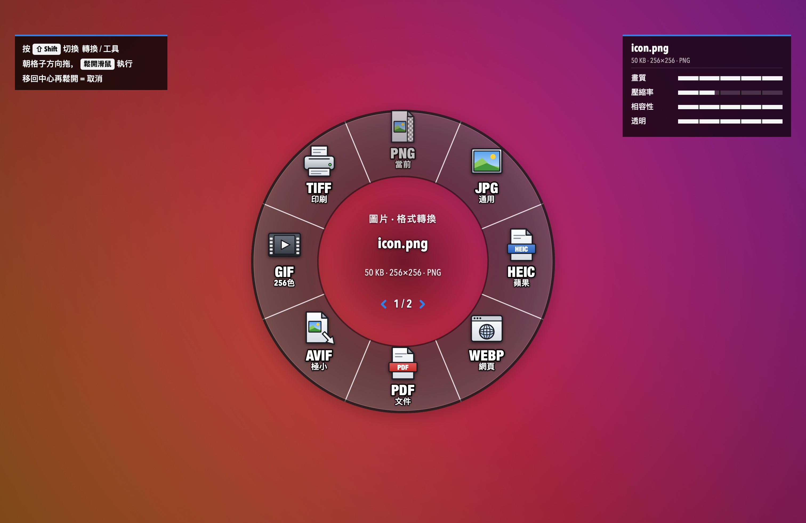
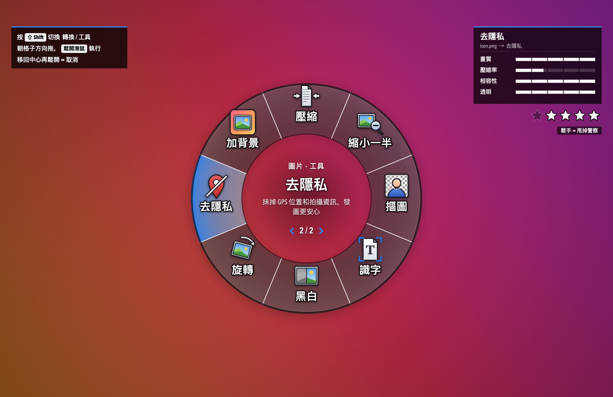
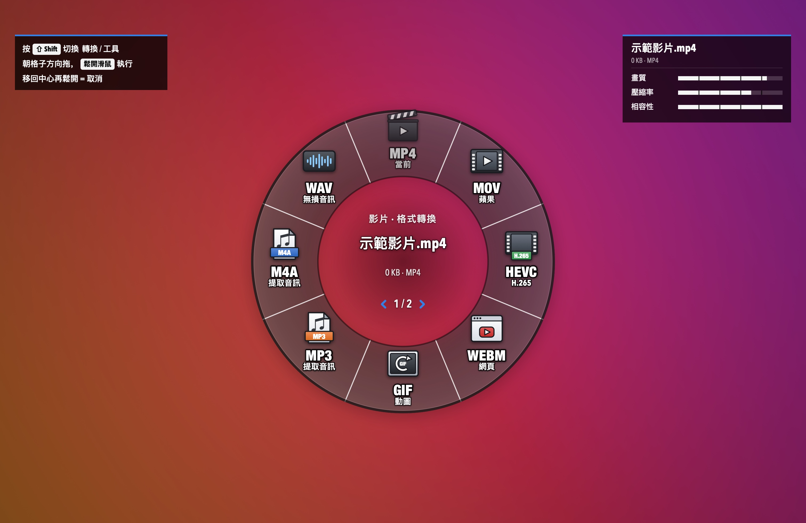
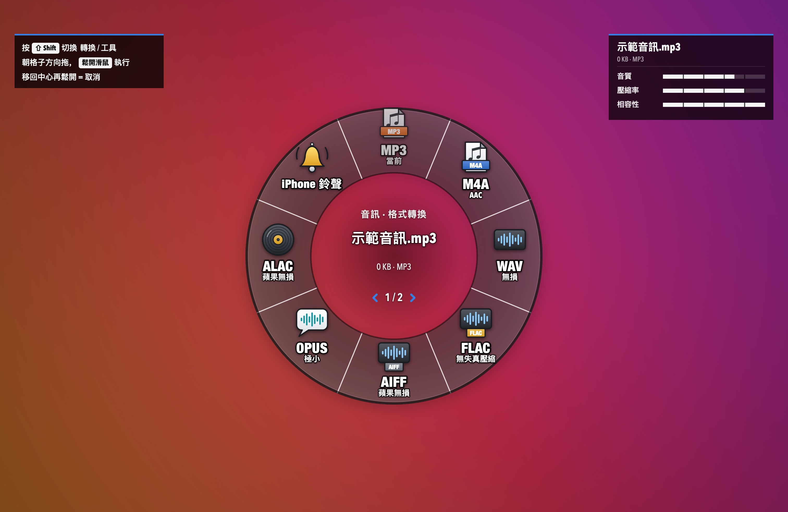
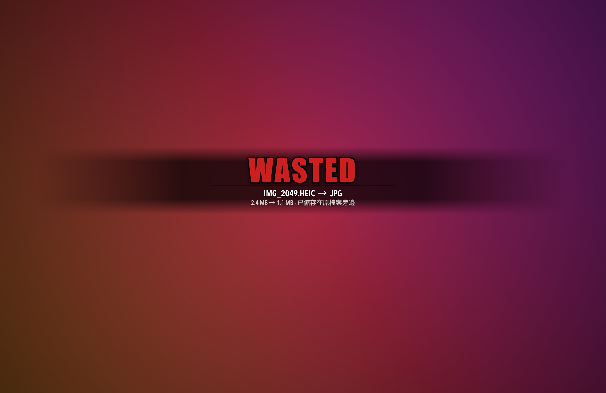
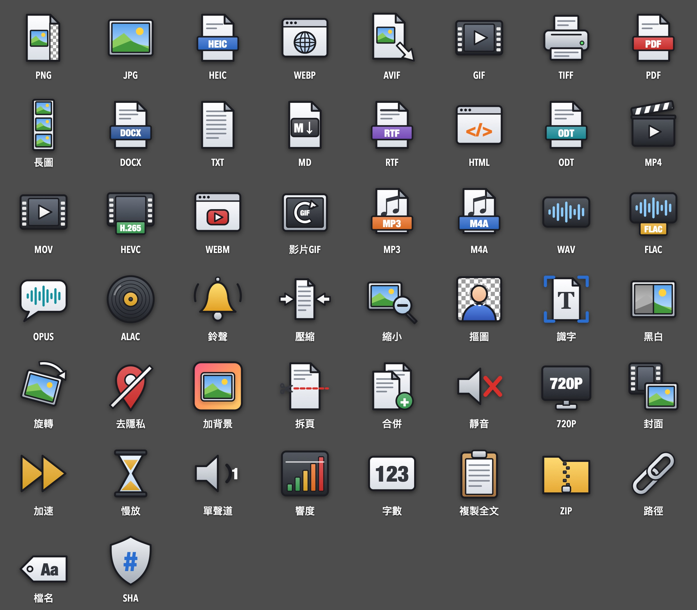
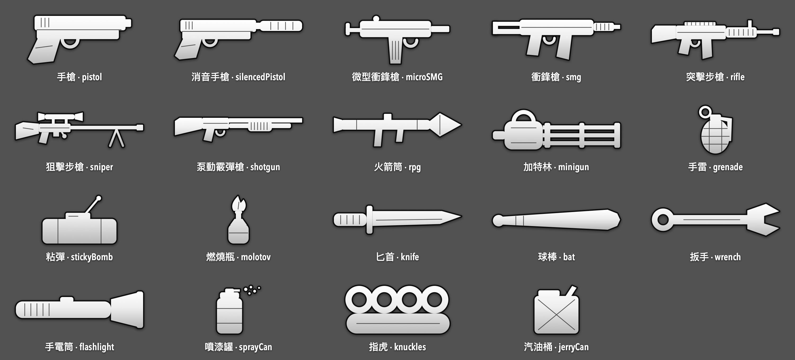

格式輪盤 · FormatWheel · for macOS
拖住檔案，按一下 ⇧ Shift
朝格子一甩，鬆手 —— 轉好了。
住在選單欄裡的格式轉換輪盤。圖片、PDF、影片、音訊、文件，70 多種轉換和小工具，全程在你的 Mac 上完成。

macOS 繁體中文介面 · Windows 10 以上版本開發中
How it works
三步，比開啟轉換網站還快

- 01拖住檔案
在 Finder 或桌面上拖住一個或多個檔案，先別鬆手。
- 02按一下 ⇧ Shift
螢幕暗下來，輪盤在滑鼠處彈出；再按一次翻到「工具」頁。
- 03朝格子一甩，鬆手
方向對就行，不用拖到格子上。結果存在原檔案旁邊，原檔案不動。
Loadout
輪盤裡有什麼
拖什麼檔案，就彈出什麼輪盤。第 1 頁是格式轉換，按 Shift 翻到第 2 頁是工具。右上角屬性條告訴你這一下會得到什麼、犧牲什麼。


圖片
轉換PNG · JPG · HEIC · WebP · PDF · AVIF · GIF · TIFF
工具壓縮 · 縮小一半 · 摳圖 · 識字 · 黑白 · 旋轉 · 去隱私 · 加背景
轉換PNG · JPG · 長圖 · Word · TXT · Markdown · RTF · HTML
工具壓縮 · 拆頁 · 合併 · 旋轉 · 黑白 · 識字 · 去隱私 · ZIP
影片
轉換MP4 · MOV · HEVC · WebM · GIF · MP3 · M4A · WAV
工具壓縮 · 靜音 · 720P · 截封面 · 2 倍速 · 慢放 · 去隱私 · ZIP
音訊
轉換MP3 · M4A · WAV · FLAC · AIFF · Opus · ALAC · iPhone 鈴聲
工具壓縮 · 單聲道 · 響度統一 · 1.5 倍速 · ZIP · 複製路徑
文件
轉換PDF · Word · TXT · Markdown · HTML · RTF · ODT · DOC
工具字數統計 · 複製全文 · 去隱私 · ZIP · 複製路徑
其他 / 資料夾
通用ZIP · 複製路徑 · 複製檔名 · SHA-256
多選圖片時，PDF 格子會把它們合成一個 PDF。
Wanted level
通緝星級
輪盤一開啟，右上角就亮起通緝星：星越多，檔案裡能追蹤到你的資訊越多。
- 照片 / 影片裡的 GPS 定位★★
- 手機或相機型號、拍攝時間、機身序列號各 ★
- PDF 的作者 / 製作軟體 / 主題關鍵詞★★ ★ ★
- Word 的作者 / 修改人 / 公司名★★ ★ ★
指向「去隱私」格子時星星開始閃，鬆手後星星熄滅 —— 甩掉警察。照片、影片、PDF、Word 都支援，不重新壓縮畫面。
Mission
翻車也要有儀式感
成功時先響一聲武器上膛（手槍拉套筒、霰彈槍“咔嚓”、手雷拔環……），再彈出 ；失敗就壓暗螢幕打出 ，順便告訴你怎麼修。

Two styles
格子圖示，兩種都有
預設是格式圖示：一眼看出格式本身的特點，PNG 帶透明格、JPG 是風景照、WebP 是瀏覽器、TIFF 是印表機。選單欄 →「格子圖示」可以換成武器：PNG 突擊步槍、JPG 手槍、PDF 火箭筒、摳圖 匕首。


Install
安裝
- 下載 FormatWheel.dmg，雙擊開啟，把「FormatWheel」拖進「Applications」。
-
如果 macOS 顯示「無法驗證開發者」，先確認下載來源並核對檔案雜湊值。此版本未經 Apple 公證；是否信任與開啟，由使用者自行決定：
macOS 14
在「應用程式」裡右鍵點 FormatWheel →「開啟」→ 彈窗裡再點「開啟」。
macOS 15 及以後先雙擊一次，然後去「系統設定 → 隱私與安全性」，拉到下面點「仍要開啟」，輸入開機密碼。
- 選單欄會多一個小輪盤圖示（Dock 裡沒有），第一次會自動示範一遍。之後在 Finder 裡拖住檔案、按 Shift 就行。
WebP 需要 cwebp；AVIF、WebM、MP3、Opus、影片變速等需要 ffmpeg。沒裝時這些格子顯示「未裝備」，其他格子照常能用。裝了 Homebrew 的話：
brew install ffmpeg webp